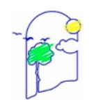

La cámara convierte el color en números. Con iluminación, distancia y recipiente constantes, esos datos pueden relacionarse con la concentración.
Analiza el cuadrado central. Usá una caja o soporte, LED blanco fijo, fondo uniforme, mismo recipiente y mismo volumen.
El celular no reemplaza al espectrofotómetro. Reproduce su lógica general: fuente de luz → muestra → detector → intensidad → absorbancia.
Copiá las concentraciones conocidas y las absorbancias obtenidas.
| Patrón | Concentración | Señal Sᵣ |
|---|---|---|
| 1 | ||
| 2 | ||
| 3 | ||
| 4 | ||
| 5 |
La concentración no cambia necesariamente la “calidad” del color: cambia la intensidad relativa de los canales. Por eso usamos el cociente R/(R+G+B), que reduce parcialmente el efecto de variaciones globales de iluminación.
“¿Puede un celular medir un color?”
RGB son intensidades de rojo, verde y azul.
Blanco, patrones y desconocida.
“¿Qué variables debimos controlar?”